Here's how
we brought
a dream to life.
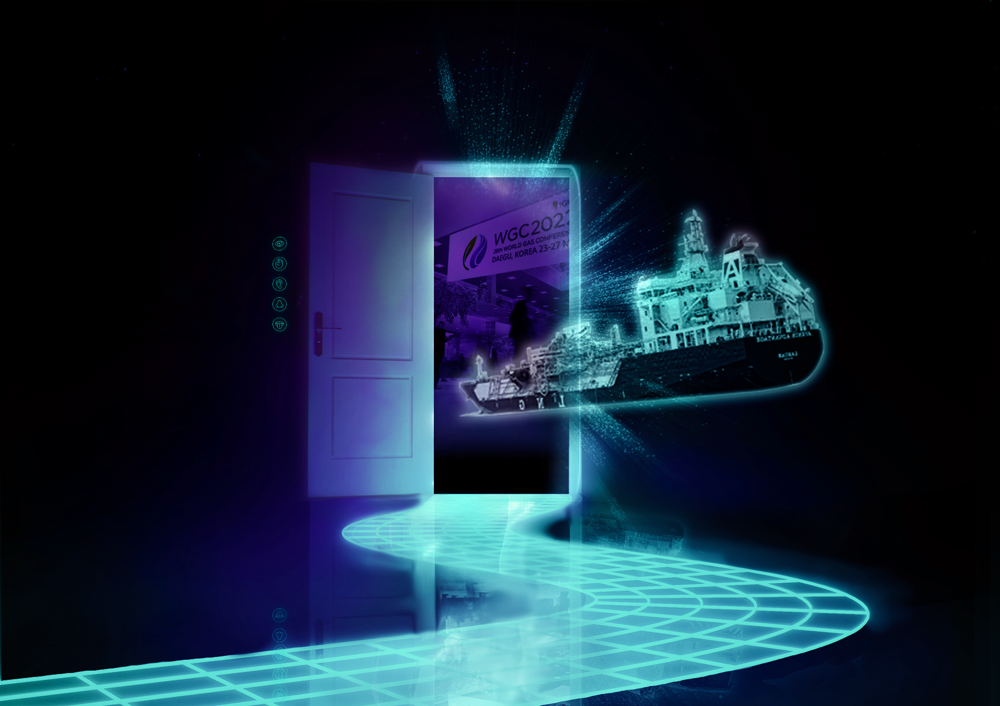
Making their first contact with the ocean
A giant step forward with the hull launch of both PFLNG SATU & DUA. The 365-metre-long and 393-metre-long hulls floated out at a dock and launched to anchor.
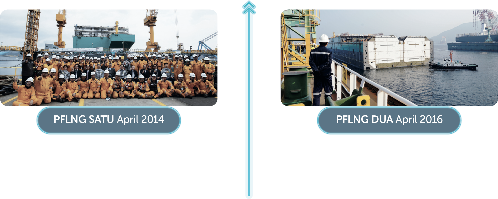Building the foundation of the vessels
The first block of the keel was laid as the basic structure around which the hull of the FLNG vessels was built on.
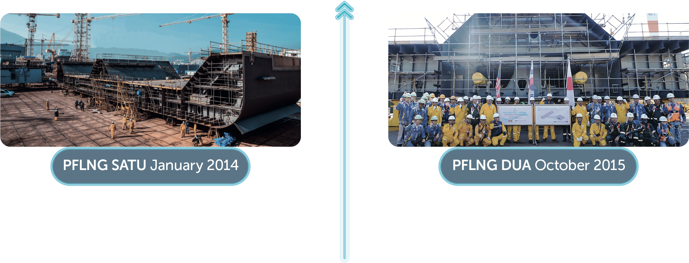Giving birth to the vessels
The construction of the vessel began with steel cutting. It marked the very beginning of PFLNG SATU and DUA's construction phase.
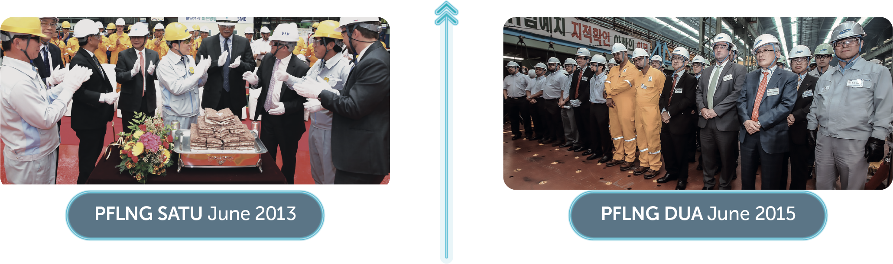Establishing a strong identity in the world of LN
The day that these PETRONAS megastructures were named PFLNG SATU and PFLNG DUA.
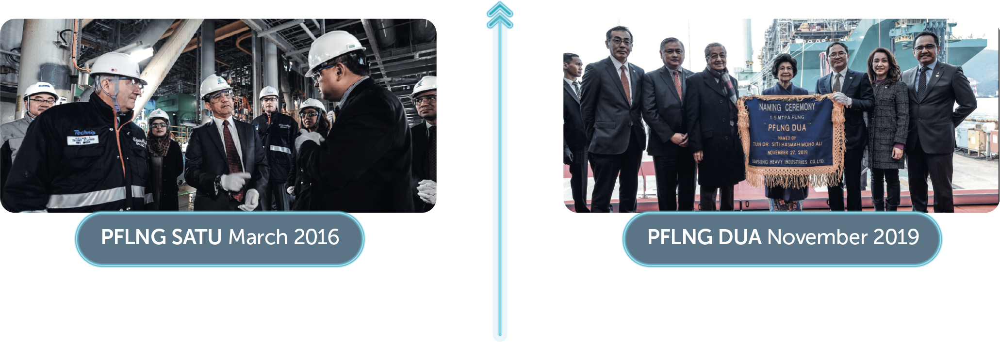Putting the final touches
The final piece or module was lifted and installed on the vessels, marking the completion of module lifting for PFLNG SATU and DUA. In total, PFLNG SATU has 21 modular systems while PFLNG DUA is equipped with 18 modular systems. with the hull, to build an enormous facility.
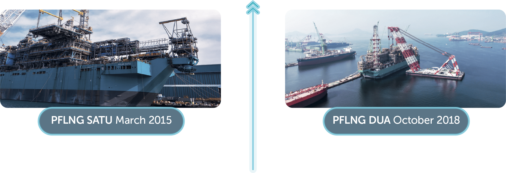Putting the pieces together
The vessels' natural gas liquefaction plants were built in pieces, also known as modules. The topside module was the first piece to be lifted, on which power generation and liquefaction instruments were to be installed. This marked the beginning of putting PFLNG SATU & DUA into shape by bringing all the modules together and connecting them with the hull, to build an enormous facility.
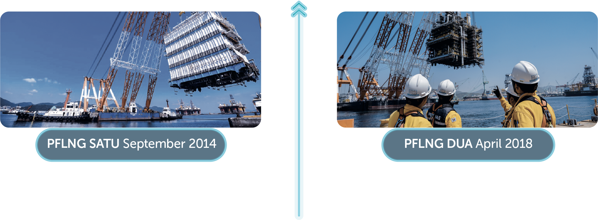Starting the engine for an adventurous journey ahead
The vessels were ready to be introduced to natural gas
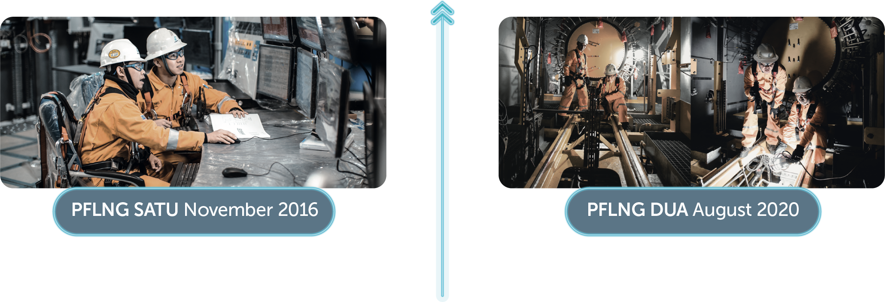Making first contact with natural gas
The mooring system is a key feature in PFLNG SATU and DUA design, to ensure they can withstand changing wind and sea conditions. Once moored to the seabed, the team executed the hook-upand commissioning phase for PFLNG SATU to connect to the KAKG platform while PFLNG DUA is connected to the subsea infrastructure at the Rotan Field.
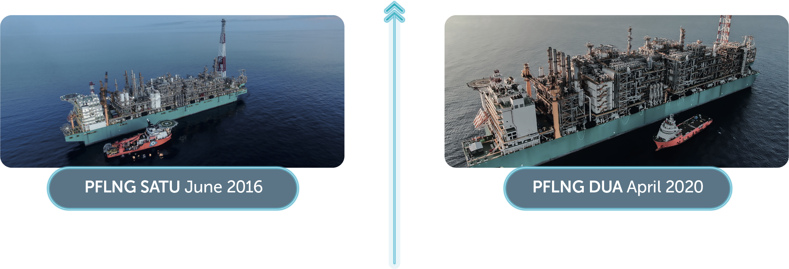Making their journey home
PFLNG SATU made its historic journey from Daewoo Shipbuilding & Marine Engineering Co. Ltd. (DSME) shipyard in Okpo, South Korea, to the Kanowit gas field, offshore Sarawak. The journey covered 2,120 nautical miles over a course of approximately two weeks. The two-week journey started from Samsung Heavy Industries yard in Korea and covered a total of 1,840 nautical miles.
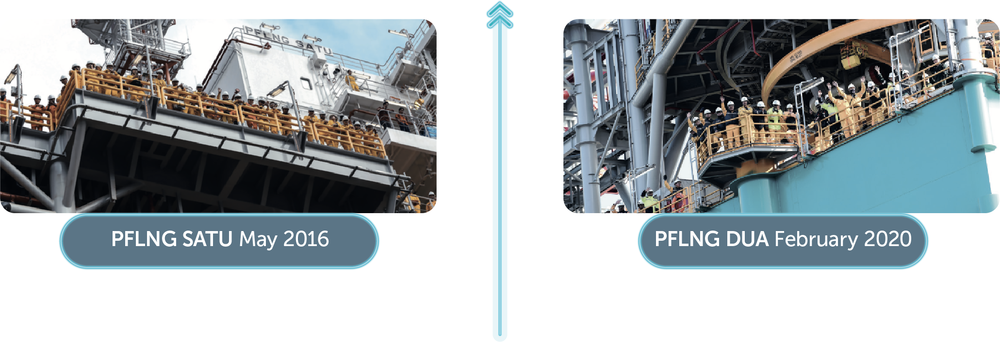Thank you for
following our journey.
Delivering our commitments
The vessels loaded their first shipment of liquefied natural gas to meet the world's growing demand for natural gas.
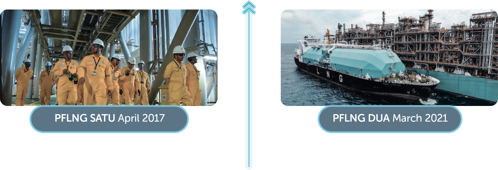Making first contact with natural gas
The vessels broke through the industry with its first drop of LNG. Natural gas was treated and liquefied via nitrogen-based liquefaction unit, the heart of the FLNG vessels, and was processed into the very first drop of LNG.
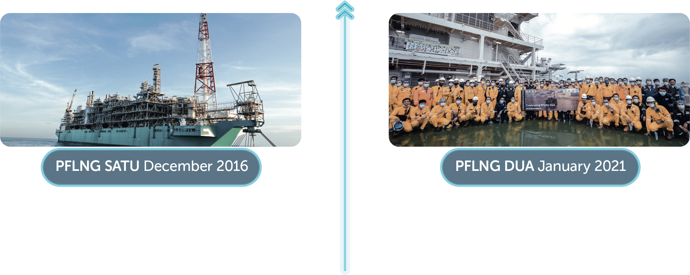